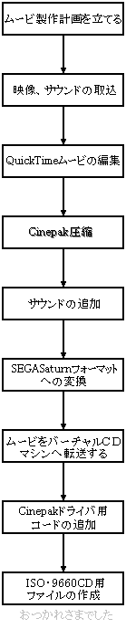
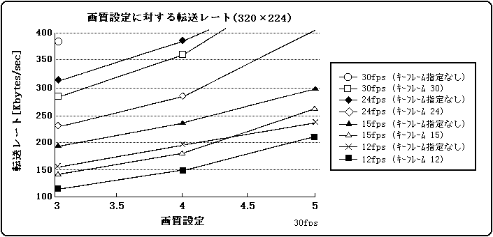
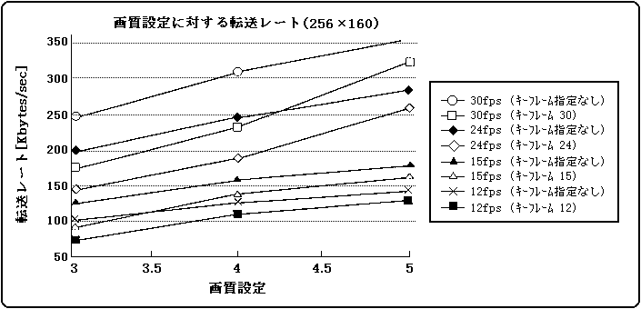
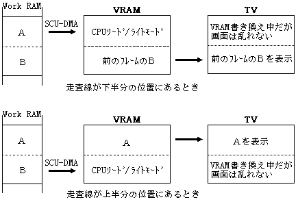
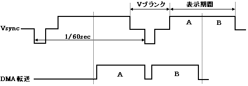
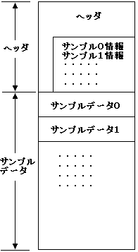
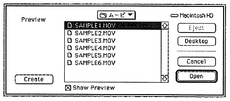
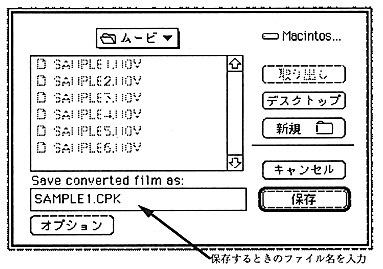

★MOVIE TOOLS GUIDE
★Cinepak for SEGASaturn
★MOVIE TOOLS GUIDE
★Cinepak for SEGASaturn
オリジナルの音声、映像、グラフィック素材をSEGASATURNフォーマットに取込むプロセスは、オリジナルソース素材や最終的な形式によって異なります。プロセスの開始位置、ステップ数、必要なツールなどはすべて持っている機材ややりたいことによって変わってきます。本章では、どの方法が一番いいのかを決めるのに役立つ情報について説明します。
 |
・フレームサイズ、フレームレート、サウンドの決定 ・CDからの転送レート |
・ビデオデッキ、レーザーディスク、カメラ ・QuickTimeアニメーション、PICTファイル ・CG、アニメーションファイル等から ・映像、サウンドを取り込みQuickTimeムービに変換する | |
・QuickTimeツールを使う ・シーケンス、長さを編集する ・必要ならばムービにエフェクトをかける ・サウンドトラックを追加編集する ・サウンドのレートを変える場合は、編集後サウンドをカット保存する | |
・Quality、Key Frameその他必要項目を設定する ・Cinepakで圧縮する | |
・必要ならばサウンドを追加する | |
・MovieToSaturn_Jを使ってCinepak圧縮してQuickTimeムービを | |
・使用できるならば、LANでバーチャルCDマシンへ転送する ・必要に応じて、Mac-PC間のファイル変換する | |
・Cinepakライブラリを使ってCinepakプレーやを追加する ・必要に応じて、サンプルプログラムを追加する | |
・バーチャルCDでCDイメージファイルを作成する |
サンプリング周波数×A×B＋画像の転送レート <300KB/S……(式2.1)
Ａ：8bitPCMならば A=1 16bitPCMならば A=2 Ｂ：モノラルならば B=1 ステレオならば B=2
図2.2 画質設定に対する転送レート(320×224)

図2.3 画質設定に対する転送レート(256×160)

32K色、320×224サイズ 24〜30fps
画質を確保するためには24fps以下が適当
16M色、320×224サイズ 15〜18fps
図2.4 VRAMへのデータ転送イメージ

図2.5 VRAMへのデータ転送イメージ

Ｈ＝(Ｌ×Ｆ＋4Ｌ−1)×16＋80……（式2.2） Ｈ：ヘッダサイズ［バイト］ Ｌ：ムービの長さ［秒］ Ｆ：フレームレート［fps］
図2.6 Cinepak for SEGASATURNムービファイルフォーマット
 |
ムービについての全体的な情報と |
各サンプルデータのオフセット、 | |
サンプルデータ０には必ずサウンドデータが | |
図2.7 MovieToSaturn_J ムービ選択ダイアログ

図2.8 MovieToSaturn_J ムービ保存ダイアログ

★MOVIE TOOLS GUIDE
★Cinepak for SEGASaturn